UX Engineer, Tajoal
Profile
- Name
- 최경환 (Kyunghwan Choi)
- Gender
- Male
- Birthday
- 20th February 1981
- Height
- 185cm
- Weight
- 83kg
- Blood type
- B
- Hobby
- Basketball
- Mobile
- 010-육오구륙-칠팔사오
- SNS
-
- twitter : http://www.twitter.com/Otajoal
- facebook : https://www.facebook.com/kyunghwan.choi.52
- positionfov@gmail.com
- Motto
- 인내와 끈기, 그리고 지칠 줄 모르는 노력은 성공을 위한 가장 확실한 요소들이다.
- Education
-
- 강릉 중앙고등학교 정보통신과 (1996. 3 ~ 1998. 2)
- 강원도립대학교 시각미디어디자인과 (1999. 3 ~ 2004. 2)
- 한국방송통신대학교 컴퓨터과학과 (2014. 3 ~ 재학중)
- Career
-
- (주)여행사닷컴 Webteam 웹디자이너 (2006, 11. 12 ~ 2008, 2. 29 정규직)
- (주)SG 크리에이트 온라인사업부 컨텐츠개발팀 대리 (2008, 4. 21 ~ 2010. 5. 31 정규직)
- 엔도어즈 플랫폼개발실 기술지원팀 UI Developer (2010. 6. 7 ~ 2011. 3. 31)
- 넥슨 라이브본부 라이브웹개발팀 UI Developer (2011. 4. 1 ~ 2013. 7. 31)
- 엔도어즈 서비스플랫폼팀 UI Developer (2013. 8. 1 ~ 2015. 4. 24)
- 앤서스랩 Front-end Developer (2015. 4. 27 ~ )
Introduction
"오늘보다 나은 내일을 만들기 위해 조금씩 정진하여 끊임없이 배우는 삶을 살고 싶습니다."
저는 고등학교 때 부터 컴퓨터를 다루는 것을 좋아했습니다. 누가 가르쳐주진 않았지만 스스로 하나하나 배우는 재미가 있었습니다. 당시 포토샵 2.0으로 CD 자켓과 만화 캐릭터를 그려 보기도 하였고 PC통신 시절 안시 코드로 움직이는 그래픽을 만들기도 하였습니다.
컴퓨터로 무언가를 만드는 것에 보람을 느낀 저는 어떤 분야에 호기심이 생기면 많은 생각을 하지 않고 바로 실행에 옮기는 습관이 생겼습니다. 실천과정이 어려울 수록 나중의 결과가 더 기쁘고 벅차듯이 과정의 어려움은 훗날 보람과 희열에 비하면 보잘것 없기에 항상 배우고 실천하는 자세를 유지할 수 있었고 그러한 습관들 덕에 웹디자이너에서 부터 시작하여 현재는 Front-end Developer의 과정을 밟지 않나 생각됩니다.
나이가 들면 열정이 식는다고 합니다. 하지만 저는 배움에 있어서 나이는 전혀 장애가 되지 않는다고 생각합니다. 자전거는 폐달을 돌려야 제 기능을 발휘하듯 사람 역시 열정이란 에너지가 없다면 아무도 타지 않는 녹쓴 자전거에 불과할 것입니다.
인내와 끈기, 그리고 지칠 줄 모르는 노력은
성공을 위한 가장 확실한 요소들이다. - 나폴레옹 힐 -
"디자이너에서 Front-end Developer로 거듭나는 능동형 개발자"
모든일에는 순서와 방법과 규칙이 존재합니다. 제가 IT에 첫발을 내디뎠을 쯤엔 한국의 웹분야는 웹표준, 웹접근성이라는 말이 생소하고 낯설었습니다. 하지만 저는 웹퍼블리셔로 직업을 굳혀야 겠다고 마음을 먹기 그리 오랜 시간이 걸리지 않았습니다. 잘못된 태그를 오용 또는 복제하고 장애인에 대한 배려는 전혀 없는 웹사이트들이 대부분이었기 때문입니다.
2008년 당시만 해도 관련 학원도 없고 따로 가르치는 곳도 없었기에 세달여간 집에서 독학을 하였습니다. 물론 멘토가 없었기에 힘든점이 많았지만 선행 개발자들의 블로그나 홈페이지에서 좋은 얘기와 개발 지식을 많이 얻을 수 있었습니다.
그러던 어느날 IT 동호회에 가입하게 되었고 동호회 주최로 강의를 부탁 받았습니다. 부족하지만 제가 배웠던 것들 그리고 웹표준을 필요로 하는 사람들에게 "올바른 웹사이트를 위한 웹표준" 이라는 주제로 웹디자이너, 기획자 등을 대상으로 4시간 동안 강의를 했던 경험이 있습니다.
그때 당시 생각은 누구를 가르치기 위해서라기 보다는 항상 도전하고 실천하는 자세를 중요시 생각하기 때문과 웹표준의 중요성을 각인시키고 싶은 마음이 강했고 저에게는 자신감을 심어주었던 소중한 경험이 되었습니다. 그리고 2주에 1번 소속된 IT 동호회에서 마련한 스터디와 세미나에 참여하면서 제 분야를 사람들과 공유하고 새로운 지식을 얻기도 하였습니다.
엔도어즈에 입사한 후로는 UI개발자가 저 혼자였지만 가이드라인의 필요성을 느껴 UI 가이드라인과 SEO 가이드라인을 작성해 공유하였고 동적인 웹의 관심이 커지면서 자바스크립트, 제이쿼리의 활용을 위해 학원을 다니면서 공부하였습니다. 프로그래밍을 전공하지 않아서 자바스크립트에 적응하기가 처음엔 꽤 힘들었지만 개인 블로그에 스터디 작업물을 틈틈히 포스팅을 하고 티저 사이트나 프로모션 페이지에 동적인 효과들을 구현하면서 DOM API와 객체지향 자바스크립트 프로그래밍를 이해하게 되었습니다.
넥슨으로 그룹사 이동 후에 불멸온라인, 영웅시대30, 삼국지를 품다 등 여러가지 프로젝트에 참여하였고 그 중에서 마비노기와 삼국지를 품다 웹접근성 고도화 프로젝트가 가장 기억에 남습니다. 사내 웹접근성TF 팀과 협업 하면서 웹접근성을 끌어올리기 위해 웹접근성 프로젝트 관련 서적을 구입하여 보았으며 세미나 참여를 통해 사용자의 다양성에 대해 다시 한번 깊게 생각하게 되었습니다. 엔도어즈에서는 모바일 웹앱 프로젝트를 진행하면서 HTML5와 CSS3를 적극 활용하고 있고 반응형 웹 프로젝트도 진행한 경험이 있습니다.
현재는 심도 깊은 자바스크립트에 관심을 가지며 SPA(Single Page Application) 개발과 Html5 API인 Canvas 스터디를 하고 있으며 현재 재학 중인 방송통신대 수업을 통해 소프트웨어 개발 기반의 지식 범위를 점차 넓혀가고 있습니다. 또한 좋은 개발자 컨퍼런스 행사가 있으면 참여하여 IT 최신 트렌드와 기술을 접하고 강사가 발표한 프리젠테이션 내용 중 관심 있거나 흥미 있는 내용은 다시 검색하여 견문을 조금씩 넓혀가고 있습니다.
"모든 사용자에게 감동을 주는 개발자"
저는 모든 사용자에게 감동을 주는 개발자가 되는 것이 최종 목표입니다. 단순히 이것을 최종 목표라 말하진 않습니다. 기술은 진보하고 있고 플랫폼은 또 다시 변할 것입니다. 하지만 변하지 않는 사실은 개발자가 아무리 유능한 제품을 만든다 하더라도 사용자 입장에서 배려하지 않으면 안된다는 것입니다.
흔히 개발자는 프로젝트 완성을 목표로 기능구현 작업을 한다고 하지만 제가 목표하는 UI개발자는 UI를 통해 인간이 컴퓨터로부터 얻는 정보의 가치를 극대화 시키는 일과 사용자가 바로 느낄 수 있는 감성적인 부분을 중요하게 생각하고 이를 실현시킬 수 있는 개발자 입니다. 이러한 목표를 실현하기 위해서는 풍부한 UX 지식과 휴먼 인터페이스 기술을 훌룡히 구현할 수 있는 소양을 계속 쌓아나갈 것이고 언제나 사용자를 생각하는 `역지사지`의 마음을 되새기며 일에 몰두할 것입니다.
Portfolio
프로모션 페이지, 운영(유지보수) 정도의 프로젝트는 제외 되었습니다.
-
2018 years
- 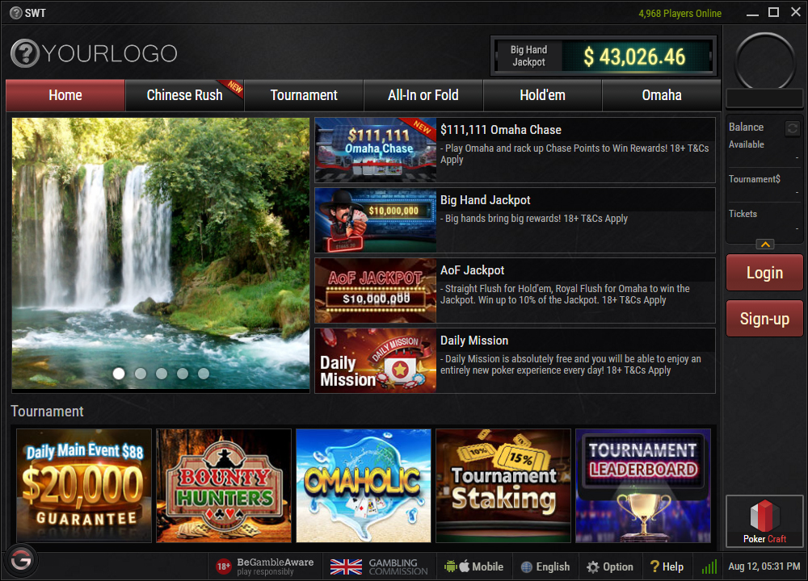
-
- ProjectBallantine
- 참여도 Angular(20%), scss(70%), template(70%)
- 설명Chivas 웹버전
- UrlBallantine
-
2017 years
-
- ProjectChivas
- 참여도 Angular(20%), scss(70%), template(70%)
- 설명기존 설치형 포커 게임 클라이언트를 Html5 버전으로 개발
- Url게임 다운로드
-
-
2016 years
- 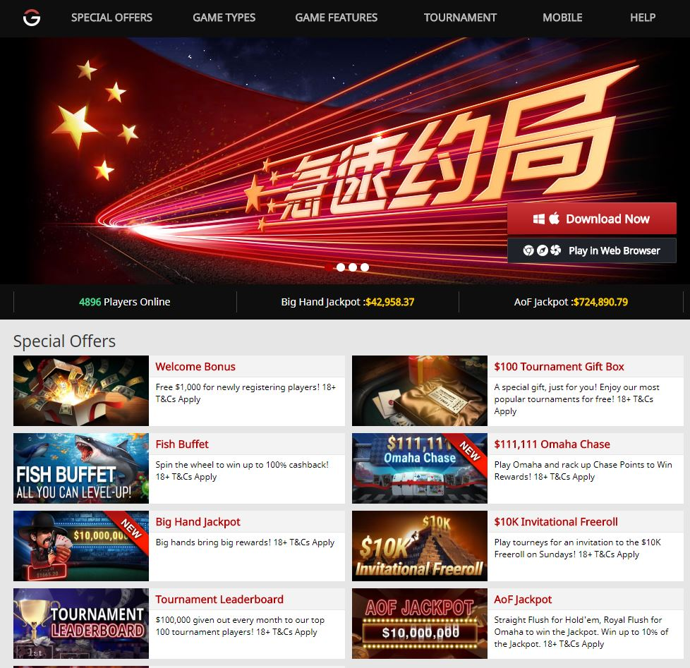
-
- ProjectLeaflet
- 참여도 Html(100%), css(100%), Javascript(50%)
- 설명브랜드용 포커 게임 홍보 사이트로 반응형 웹으로 구현 되었습니다.
- Url메인페이지
-
2015 years
- 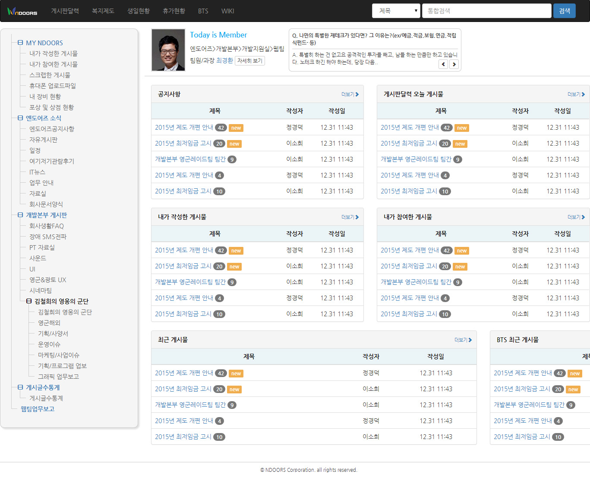
-
2014 years
- 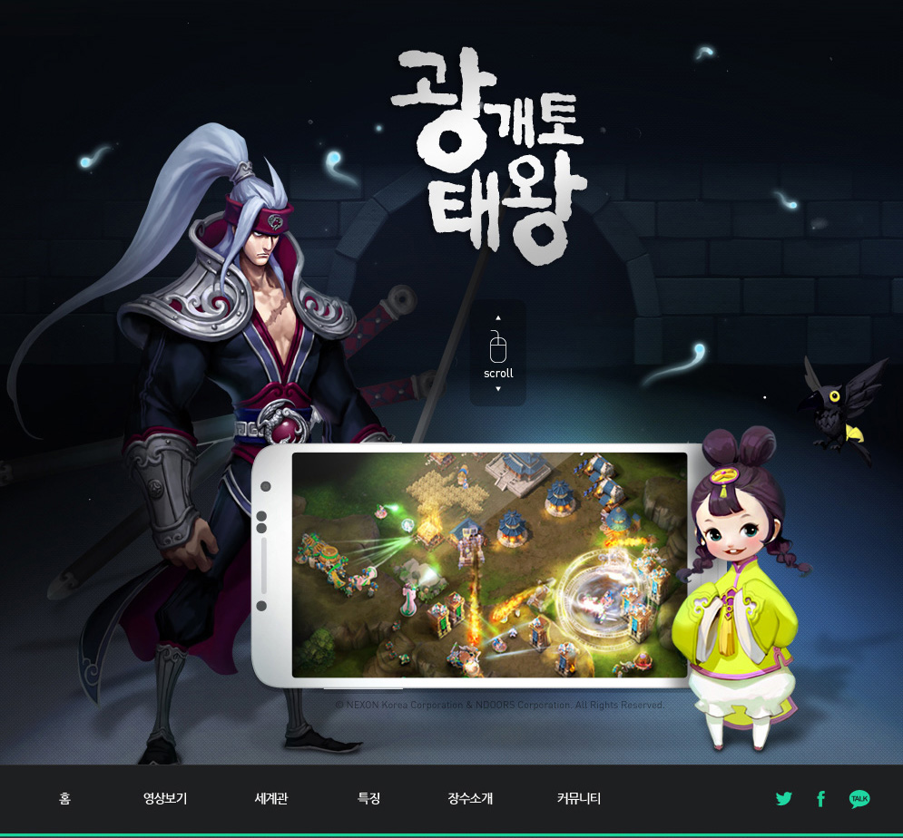
- 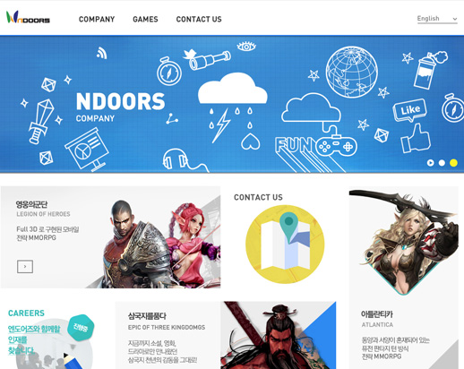
- 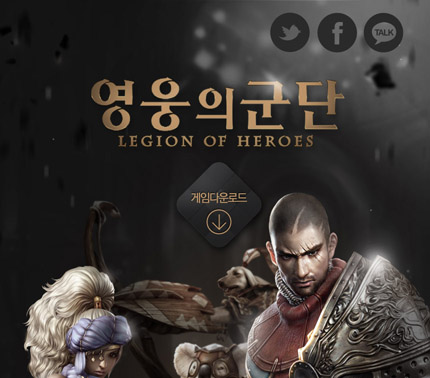
-
- Project영웅의 군단 브랜드 사이트
- 참여도 Html5 markup(반응형 웹), css3 설계, Javascript(스크롤링, swipe) (참여도:100%)
- 설명영웅의 군단 공식 브랜드 페이지를 반응형 웹사이트로 작업하여 다양한 디바이스에서 잘보이도록 설계하였습니다.
- Urlhttp://yg.nexon.com
- 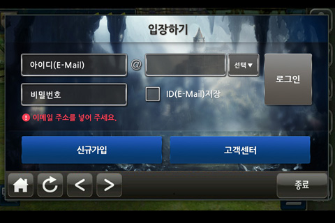
-
- Project영웅의 군단 Ingame site
- 참여도Html5 markup(반응형 웹), css3 설계, Javascript 업무 (참여도:100%)
- 설명모바일 게임 내의 로그인, 공지사항, 고객센터 모바일 웹을 개발하였습니다.
- Urlhttp://klohw.ndoors.com/mobile/login.aspx
-
2013 years
- 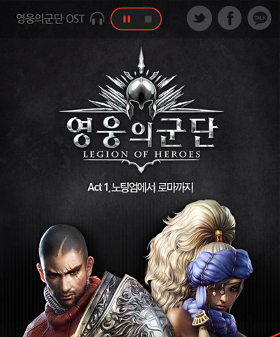
-
- Project영웅의 군단 CBT
- 참여도Html5 markup(반응형 웹), css3 설계, Javascript(갤러리) (참여도:100%)
- 설명엔도어즈에서 개발한 모바일 게임인 영웅의 군단 CBT를 반응형 웹으로 작업 하였습니다.
- UrlCBT 화면
- 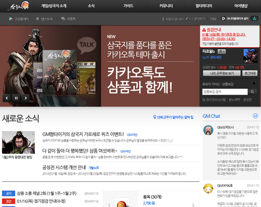
-
- Project삼국지를 품다(웹접근성 고도화)
- 참여도Html markup(웹접근성 준수), css 수정 (참여도:100%)
- 설명대체텍스트, 키보드 접근성, 스크린리더 테스트 등을 통해 장애인을 배려하도록 설계하였습니다.
- Urlhttp://3p.nexon.com
- 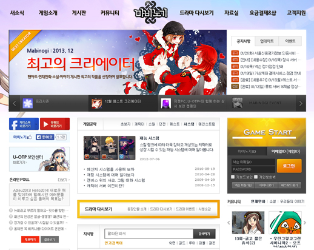
-
- Project마비노기(웹접근성 고도화)
- 참여도Html markup(웹접근성 준수), css 수정 (참여도:100%)
- 설명넥슨 자체적으로 TF를 구성하여 웹접근성 고도화 프로젝트를 실시 하였습니다.
- Urlhttp://mabinogi.nexon.com/
- 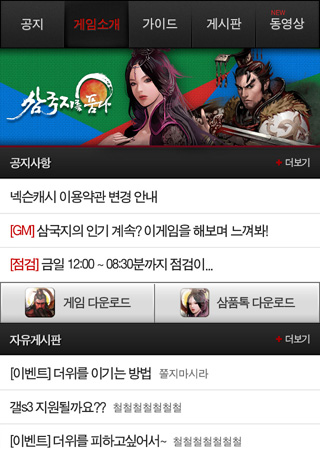
-
- Project삼국지를 품다 모바일 사이트
- 참여도Html5 markup, css3 설계, Javascript 업무 (참여도:100%)
- 설명Html5 Markup, Css3를 활용하여 flexible한 화면을 구현하였고 모바일의 다소 느린 네트워크 환경을 고려하여 최적화 하였습니다.
- Urlhttp://m.3p.nexon.com
-
2012 years
-
- Project삼국지를 품다(CBT, OBT)
- 참여도Html markup(웹접근성 준수), css 설계, Javascript(메뉴, 프로모션, 게임시작 버튼) (참여도:100%)
- 설명삼국지를 품다라는 MMORPG 게임 사이트의 UI를 개발하였고 사이트 내에 들어가는 동적인 UI부품들을 모두 개발하였습니다.
- Urlhttp://3p.nexon.com
- 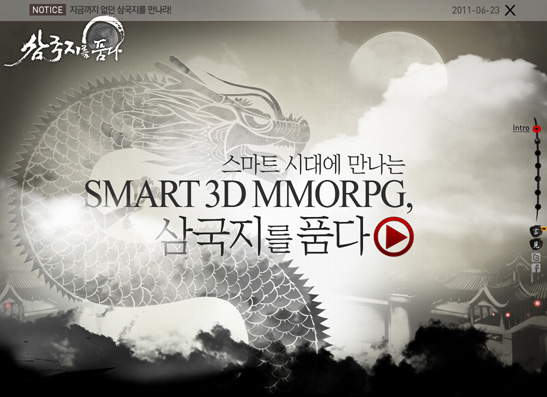
-
- Project삼국지를 품다(Teaser)
- 참여도Html markup, css 설계, Javascript(페럴렉스 스크롤) (참여도:100%)
- 설명jQuery로 parallax scrolling를 구현하여 인터랙티브한 사이트를 제작 하였습니다.
- Url티저화면
- 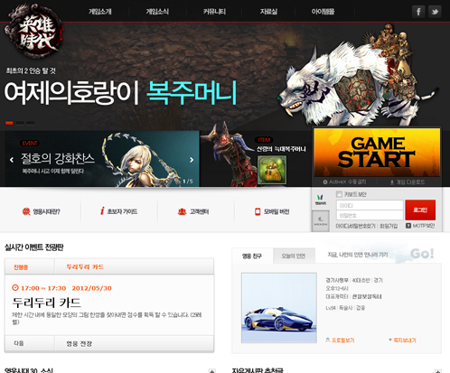
-
- Project영웅시대30(CBT/OBT)
- 참여도Html markup, css 설계, Javascript(프로모션 스크롤링, 아코디언 메뉴), 크로스브라우징(ie6+) (참여도:100%)
- 설명넥슨에서 영웅시대30 Teaser, CBT, OBT 사이트를 웹퍼블리싱 하였고 Teaser site의 경우 parallax scrolling를 구현하였습니다.
- Url메인CBT
- 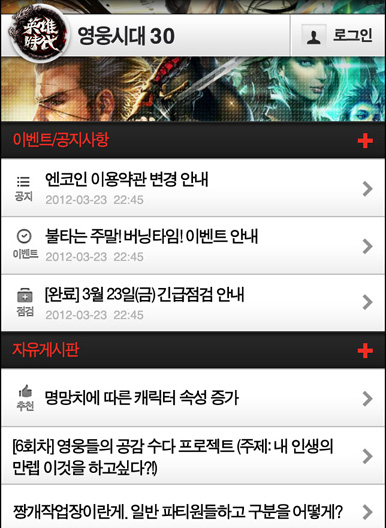
-
- Project영웅시대30 모바일 사이트
- 참여도Html5 markup, css3 설계 (참여도:100%)
- 설명Html5, Css3를 적극 사용하여 이미지를 최소화 하였으며 모바일에서 퍼포먼스가 떨어지지 않도록 최적화에 신경을 썼습니다.
- Url메인화면
-
-
2011 years
- 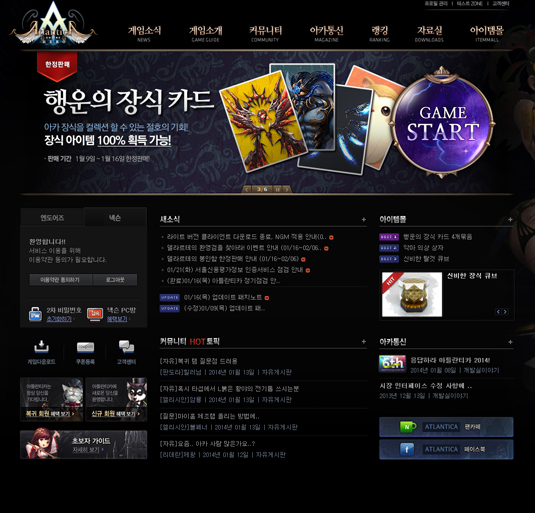
-
- Project아틀란티카 리뉴얼
- 참여도Html markup(웹접근성 준수), css 설계, Javascript(프로모션 스크롤링, 메뉴), 크로스브라우징(ie6+) (참여도:100%)
- 설명오래된 아틀란티카 웹사이트를 리뉴얼 하였습니다. 웹접근성에 준수하여 작업을 구상, 진행하였고 Javascript UI부품을 제작하였습니다.
- Urlhttp://at.ndoors.com
- 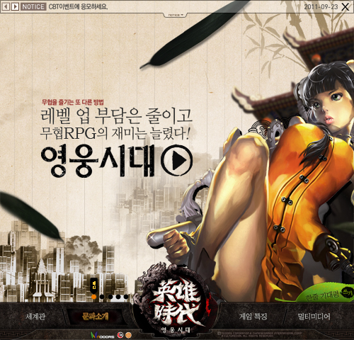
-
- Project영웅시대30(Teaser)
- 참여도Html markup, css 설계, Javascript(parallax scrolling), 크로스브라우징(ie7+) (참여도:100%)
- 설명횡으로 움직이는 parallax scrolling를 구현하여 인터랙티브한 사이트를 제작 하였습니다.
- Url티저화면
- 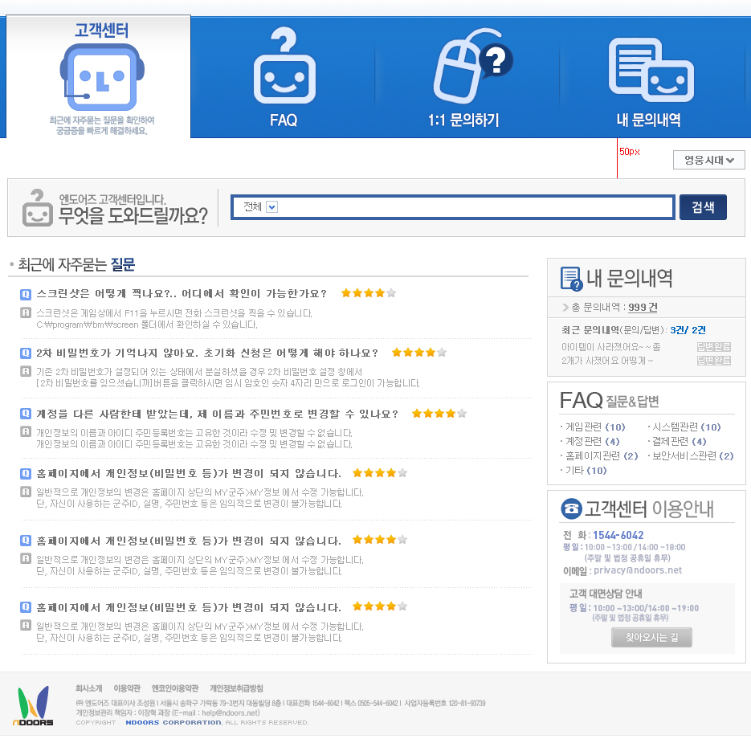
-
- Project엔도어즈 통합 멤버쉽 사이트
- 참여도Html markup, css 설계, Javascript(메뉴 롤오버, 아코디언 리스트), 크로스브라우징(ie6+) (참여도:100%)
- 설명(주)엔도어즈 회원가입, 고객센터, 마이페이지 ,아이핀프로세스 등 회원들을 효율적으로 관리할 수 있는 시스템을 구축하였습니다.
- Urlhttps://cs.ndoors.com
- 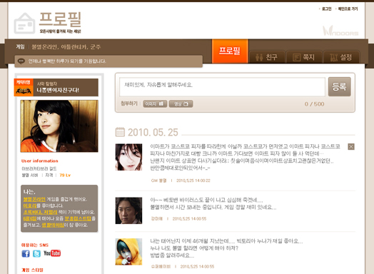
-
- Project엔도어즈 프로필 사이트
- 참여도Html markup, css 설계, Javascript(메뉴 롤오버), 크로스브라우징(ie6+) (참여도:100%)
- 설명엔도어즈 멤버들 간의 소통의 장소로써 게임 친구, 방명록 등의 기능이 들어간 프로필 사이트 입니다. 크로스브라우징을 위한 html, css를 설계하였고 lnb메뉴에 Javascript를 더하였습니다.
- Url메인화면
-
2010 years
- 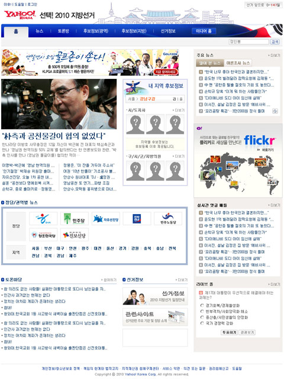
- 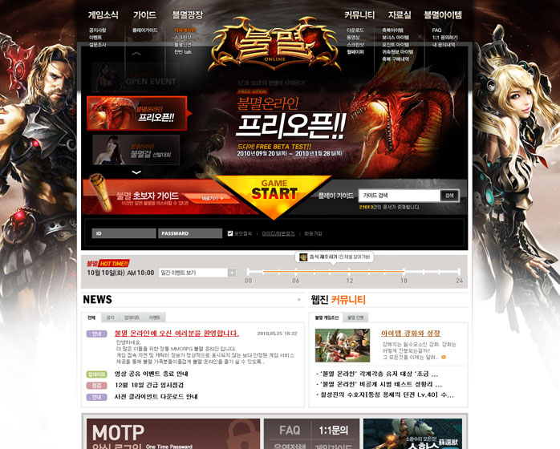
-
- Project불멸 온라인(CBT/OBT)
- 참여도Html markup, css 설계, Javascript(롤링배너), 크로스브라우징(ie6+) (참여도:100%)
- 설명엔도어즈에서 퍼블리싱한 게임인 불멸 온라인의 CBT, OBT 웹사이트를 성공적으로 론칭하였습니다. 웹페이지 안에 들어가는 UI 부품(Slider, Menu, Gallery)을 jQuery를 사용하여 개발하였습니다.
- Urlhttp://bm.nextgamelife.com/
- 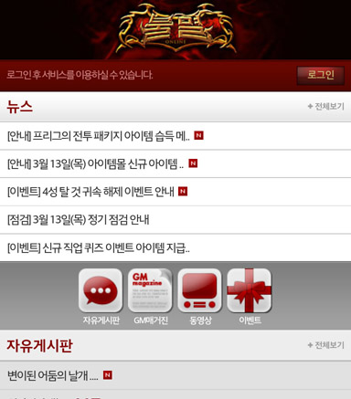
-
- Project불멸 온라인 모바일 사이트
- 참여도Html markup, css 설계, css3 일부 적용 (참여도:100%)
- 설명(주)엔도어즈에서 불멸온라인 웹사이트 오픈이후에 모바일 사이트의 필요성을 느껴 플랫폼개발팀 내부 협업으로 오픈 하였습니다. Html5 마크업과 Css3를 적용 활용하였습니다.
- Urlhttp://m.bm.nextgamelife.com/
- 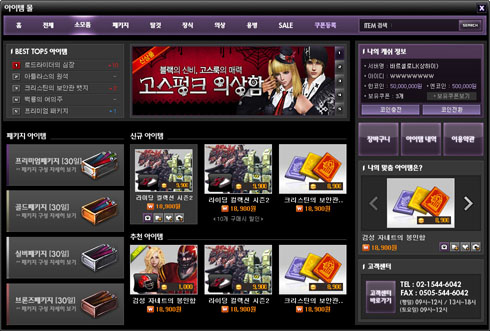
-
- Project아틀란티카 Ingame 아이템몰
- 참여도Html markup, css 설계, Javascript(롤링배너), 크로스브라우징(ie6+) (참여도:100%)
- 설명아틀란티카 게임 내의 아이템몰을 웹으로 랩핑하여 오픈하였습니다.
- Url메인화면
-
2009 years
- 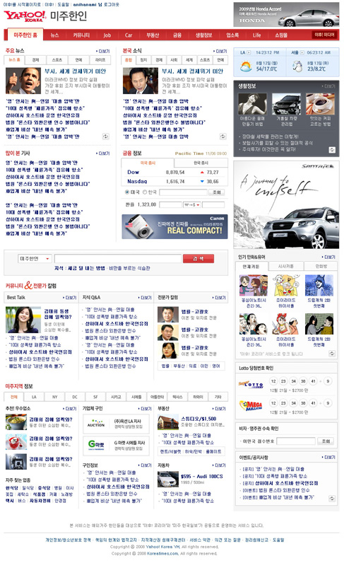
-
- Project야후코리아 'Yahoo! 미주한인'
- 참여도디자인 및 html markup, css 설계, 크로스브라우징(ie6+) (참여도:70%)
- 설명미주한인들을 대상으로 한 라이프 포털사이트 입니다. 뉴스, 구직, 커뮤니티, 자동차 등 전체 섹션 개발 운영을 담당 하였습니다.
- Url야후 코리아 내부 사정으로 Closed 되었습니다.
- 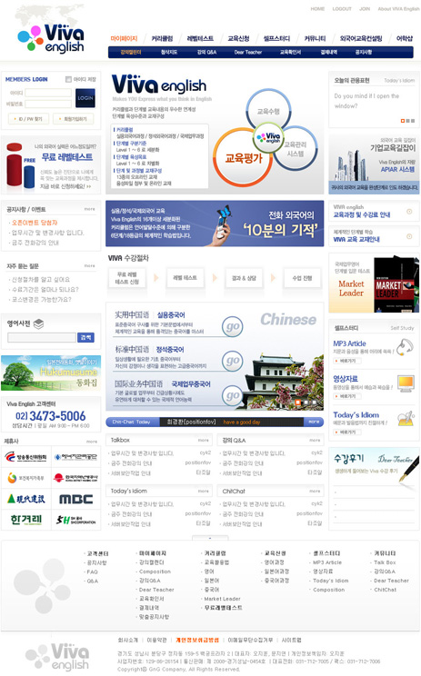
-
- Project전화영어사이트 'Viva English'
- 참여도전체 디자인, Html markup, css 설계 업무, 크로스브라우징(ie6+) (참여도:100%)
- 설명GnG Company의 전화 영어사이트 비바잉글리시를 구축 설계 하였습니다.
- Url메인화면
- 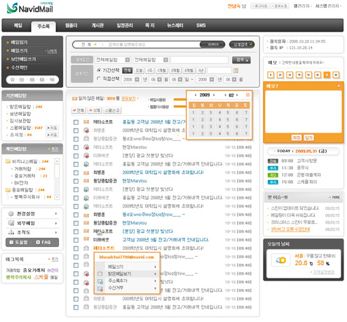
-
- Project(주)제타소프트 메일솔루션 'Navid Mail''
- 참여도Html markup, css 설계 업무, 크로스브라우징(ie6+) (참여도:100%)
- 설명제타소프트의 기존에 구코딩 방식을 바꾸어 웹표준에 맞춰 솔루션 제작하였습니다.
- Url메인화면
-
2008 years
- 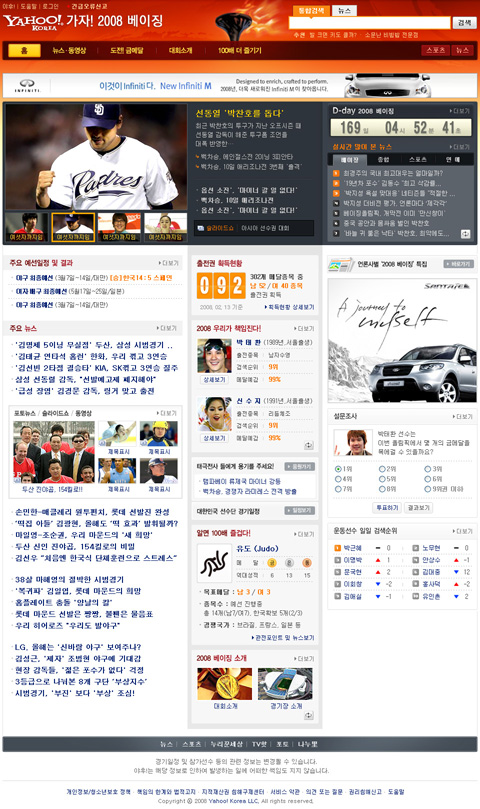
- 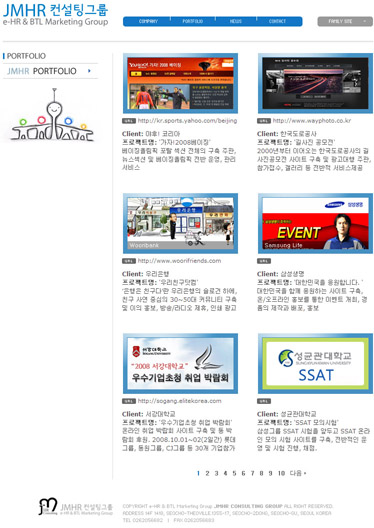
-
- ProjectJMHR 회사 소개 페이지
- 참여도Html markup, css 설계 업무, 크로스브라우징(ie6+) (참여도:100%)
- 설명JMHR 컨설팅 그룹의 회사 소개 페이지를 웹표준과 크로스브라우징 하여 제작하였습니다.
- Url메인화면